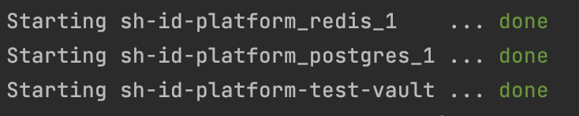
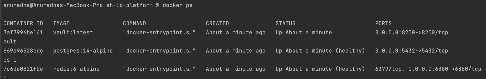
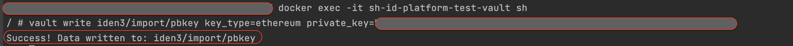
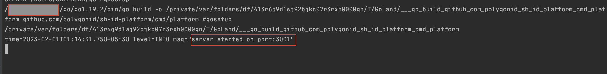
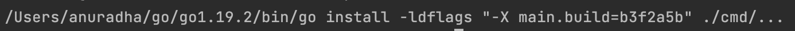
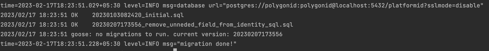
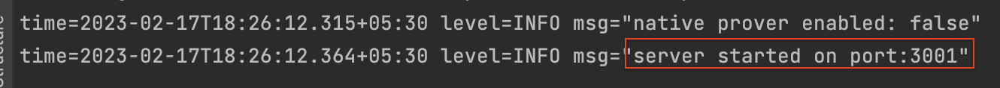
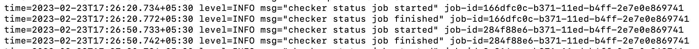

Getting Started - Full Flow Tutorial
This flow details the steps that can be carried out to achieve full integration of the Issuer Node with the Polygon ID APIs.
Steps of Flow
- Setup the Issuer Node
- Create an Identity
- Create Credential
- Create a QR Code to Accept Credential
Setup the Issuer Node
The Issuer Node can be set up in two ways: using Docker or in the Standalone Mode. If you are using the M1/M2 chip on your Mac, it is advised to run it using the Standalone Mode.
Start Issuer Node Using Docker-Compose
-
Clone the Issuer Node repository from here
-
Start Docker Daemon
-
From inside your repository use the following command to run the Vault, Redis, And Postgres containers.
make upWith this, the system runs a
docker-composecommand to start the redis, postgres, and vault containers:docker-compose -p “project name” -f path/docker-compose.yml up -d redis postgres vaultwhere the
pathshows the location of the docker-compose.yml file.This starts the Postgres, Redis, and Vault containers:

To verify that the containers are running, execute this command:
This lets you see all the containers that are currently running along with their statuses and ports.docker ps
Note: Use these docker images only for evaluation purposes. For production, you must secure each of these services first.
-
Add Ethereum Private Key to the Vault. For this, run the following command to start the vault container in the interactive mode. This command is used to go inside the vault and run
shorbshcommands inside it.docker exec -it sh-id-platform-test-vault shAs you run this command, it waits for your input. Here, as an input, we shall place the
Ethereum Private Keyin the vault:vault write iden3/import/pbkey key_type=ethereum private_key=<privkey>
With this, the Ethereum Private Key is written into the vault container.
-
To set up your Issuer Node and make it all up and running, you need to configure it first. This is done using a
config.tomlfile. The repository provides you with aconfig.toml.samplefile that contains different fields and their sample values. To start configuring these fields, create aconfig.tomlfile in your repository and paste the contents of theconfig.toml.samplein it. A few fields need to be configured before you can start the Issuer Node.-
ServerUrl: If the Issuer Node is to be started locally, enter the localhost URL (for example, http://localhost:3001). If the Issuer Node is to be hosted on Google Cloud or an AWS or some other cloud (instead of being installed locally), enter the URL where the machine is located. Note: In order to communicate with the Polygon ID Wallet App, the Issuer Node must be hosted on a public URL. For a local setup, you can use ngrok to expose your local server to the internet.
-
Keystore Token: It is the Initial Root Token of the Vault. Copy the value of this token from the Vault container and paste it here. OR, once you have run the docker containers, the token can be copied from this path in the repository: "infrastructure/local/.vault/data/init.out".
-
Ethereum URL: enter a valid JSON RPC URL for Polygon Mumbai.
-
-
Run the following command to start the Issuer Node:
make runThis starts the Issuer Node at the port specified in the
config.tomlfile.
Start Issuer Node in the Standalone Mode
In the Standalone Mode, we compile the Issuer Node and create the executables to run it without using docker.
-
Clone the Issuer Node repository from here
-
Run this command:
This command will compile and create binaries formake buildPlatform(for APIs),Migrate(for creating database schemas from scratch), andPending_Publisher(which is a program that runs in the background and gets the failed transactions and retries them).
-
Make sure that Vault, Redis, and Postgres are all up and running. You can use the
make upcommand to start the containers (but as mentioned previously, use these images only for evaluation purposes):make up
-
Add Ethereum Private Key to the Vault; for this, follow step 4 of the previous section.
-
Configure the
config.tomlfile like you did in the previous section at step 5. -
Configure your database using the following command:
make db/migrateThis checks the current structure of the database, and accordingly, either creates or updates the database.
-
Run this command to start the Issuer Node:
./bin/platformThis starts the Issuer Node. You can now browse to the port configured for your server (ServerPort)in the
config.tomlfile and view the API documentation. For example, this could be http://localhost:3001. -
Run the following command to start the Pending_Publisher service:
./bin/pending_publisher
Authenticate to Send Requests
Before you can start making API calls to the Issuer Node with endpoints, you need to authenticate first with a username and a password. This is done using the Basic Auth endpoint using Postman or your own API platform. That usernmae and password are the ones that you have configured in the config.toml file.
Create Identity
Next, you need to create an Identity for the issuer/user. For this, make a call to the Create Identity endpoint. The
didMetaData is passed in the request body. This metadata is required to create Issuer's DID.
{
"didMetadata": {
"method": "polygonid",
"blockchain": "polygon",
"network": "mumbai"
}
}
identifier (Identifier of the Issuer) and the identity state (the state of the identity). This identifier would be used to create credentials as we would see in the next step.
{
"identifier": "did:polygonid:polygon:mumbai:2qNDpfD8A2zjdiDbrzKsKe5XoP583FeBkpPyJnUEVx",
"state": {
"claimsTreeRoot": "96041fd8c899994d8b493c9f844f8ff17f1218e5400bfe68cc659b5386a88b07",
"createdAt": "2023-02-22T14:55:34.89165+05:30",
"modifiedAt": "2023-02-22T14:55:34.89165+05:30",
"state": "569bd6c053d6ddf463245127a82570841a76099a4dab3c279c6b461cf0438408",
"status": "confirmed"
}
}
Create Credential
Post Identity creation, you can start the process of credential creation. For this, the Create Claim endpoint is used. The identifier (or id) of the issuer you generated in the previous step is passed as path parameter in the request URL. credentialSchema (schema on which credential's format would be based) and credentialSubject (Subject details such as id(user's wallet id ), and other information related to the credential schema (for example, in this case, birthday and documentType) are passed in the request body.
{
"credentialSchema":"https://raw.githubusercontent.com/iden3/claim-schema-vocab/main/schemas/json/KYCAgeCredential-v3.json",
"type": "KYCAgeCredential",
"credentialSubject": {
"id": "{user's wallet did}",
"birthday": 19960424,
"documentType": 2
},
"expiration": 12345
}
{
"id": "9c08a414-b29c-11ed-9bd2-2e7e0e869740"
}
Create QR Code to Accept a Credential
Note: In order to communicate with the Polygon ID Wallet App, the Issuer Node must be hosted on a public URL.
With the Get Claim QR Code endpoint, you can generate a JSON which is then used to create a QR code. A user can use a third-party application to generate a QR Code from this JSON.
The identifier did of the issuer that we generated with the Create Identity endpoint and Credential Id cid that we generated in the Create Claim endpoint are passed as the path parameters in the request URL.
The Issuer Node responds by sending a JSON.
{
"body": {
"credentials": [
{
"description": "https://raw.githubusercontent.com/iden3/claim-schema-vocab/main/schemas/json-ld/kyc-v3.json-ld#KYCAgeCredential",
"id": "75d7ca20-b1ea-11ed-9bd2-2e7e0e869740"
}
],
"url": "http://localhost:3001/v1/agent"
},
"from": "did:polygonid:polygon:mumbai:2qPUbMiYD8qFVjM6KLTY5qSMQpR9x6aSRfNByRkckm",
"id": "cf858ea9-ab66-4c3c-8c55-e99885b086e0",
"thid": "cf858ea9-ab66-4c3c-8c55-e99885b086e0",
"to": "did:polygonid:polygon:mumbai:2qNZRvFrnVfANm9UTJ3Wn3AP4wmy9CUvX1qpYE28up",
"typ": "application/iden3comm-plain-json",
"type": "https://iden3-communication.io/credentials/1.0/offer"
}
where credentials contains the credential id (cid) and the related schema link.
url is the address at which the user's wallet makes a call to the endpoint.
from is the did of the Issuer.
to is the did of the user's wallet.
typ and type indicate the way user's wallet interacts with the Node.
Copy this JSON and paste it on a third-party website that can generate a QR code.
The user can scan this QR Code using the Polygon ID app and accept the credentials.
This adds the credential to the user's wallet.